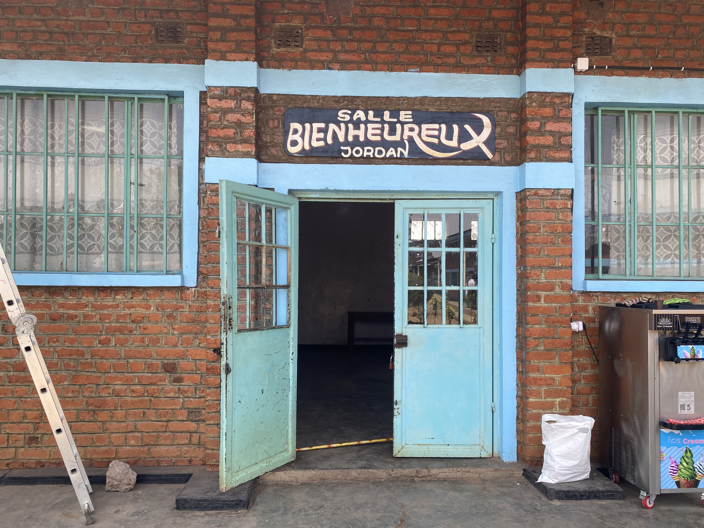
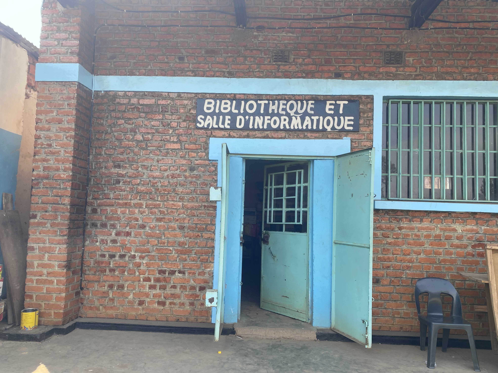

Le père Gabin Sds économe de l'école.

La Grande Salle Bienheux Jordan, lieu de rassemblement pour les événements, conférences et cérémonies.

L'espace de travail de nos enseignants : la salle des professeurs.

Le secrétariat, le cœur administratif de l'institution, toujours prêt à vous accueillir.

Les élèves de 4eme CG en pleine activité, avec le prof Eric Zeng.

Un espace dédié à l'apprentissage et à la recherche : la bibliothèque et la salle informatique.

Les bureaux de la direction et de la discipline, garants du bon fonctionnement de l'école.

La cantine, un lieu de pause convivial pour nos élèves et notre personnel.